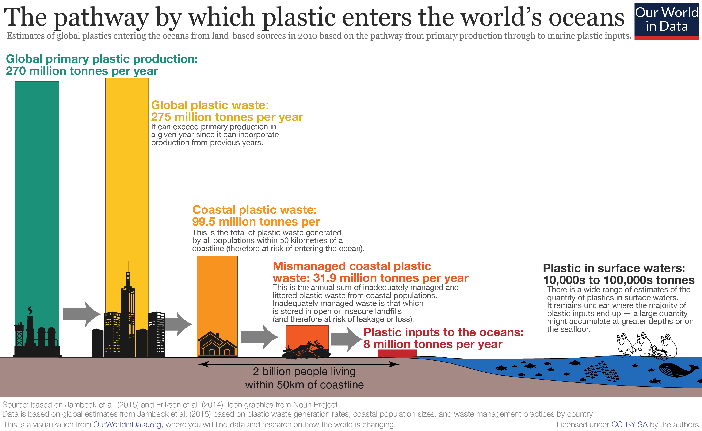

The waste humans generate waste has been detrimental to our environment for quite some time now.
Humans are generating too much trash and cannot deal with it in a sustainable way. Waste that is not biodegradable and
cannot be properly be recycled is filling our oceans and landfills. Let's take plastic waste as an example. A recent study
found that of the 6.3 billion metric tons of plastic waste that has been produced, only 9% of that plastic waste had been recycled.
In 2017, for instance, the Environmental Protection Agency calculated that the total generation of municipal solid waste in the United States
just that year was 267.8 million tons. Compared with 2015 levels, it was a 5.7 million increase. All together, the amount of waste generated
affects the environment in multiple ways: its contribution to the worsening climate crisis, its negative impact on wildlife and the natural
environment, and its detriment to our very own public health.

The way we dispose of waste is troubling. What is worse, in this decade alone, it would seem that waste disposal has become more careless. What we have failed to do is to put into action the ideas we believe will help us mitigate or adapt to climate change. Case in point: the trash that is dumped in landfills releases methane gas. Taken one step further open landfills were found to represent 91% of all landfill methane emissions. The burning of large, open piles of trash in various parts of the world emits dangerous levels of carbon dioxide, a greenhouse gas that is heating up our planet. Researchers have calculated that approximately 40% of the world's trash is burned in this fashion, posing large-scale risks to both our atmosphere and the people that live near these burning sites.
Ecosystems vary widely from location to location. However, one of the most outsize consequences of our global waste problem manifests itself in
relation to our marine life and waterways. Simply put, it affects the people who depend on the ocean for their livelihoods.
They cannot distinguish between what is or isn't food. They consume the trash, which results in death because the aquatic
animal could not process it. This affects fish, seals, turtles, whales, and many other aquatic animals, as scientists have
also found many plastic fragments in over a thousand species. Due to ingestion of trash or plastics, starvation is usually
the next step because some species do not have high acidic levels in their stomach to break down the object that they ingested.
There are some animals that do but plastic fragments have been known to be able to last 100 years. When it comes to biodiversity,
our waste problem is severely plaguing the health of the world's species.
Human health is at risk through our inaction. We keep producing large amounts of trash, we do not dispose of it correctly,
and in the end that will be our downfall as it is for the environment and wildlife in the ecosystems we all share.
We cannot prevent or promote longevity with how we treat our Earth. The more emissions that we produce due to how
much trash we generate, affects us long term. One can develop diseases such as asthma, birth defects, cancer,
cardiovascular disease, childhood cancer, COPD, infectious diseases, low birth weight, and preterm delivery.
Bacteria, vermin and insects can also be added to the problem that trash causes.